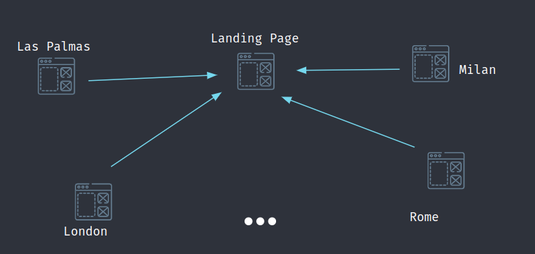
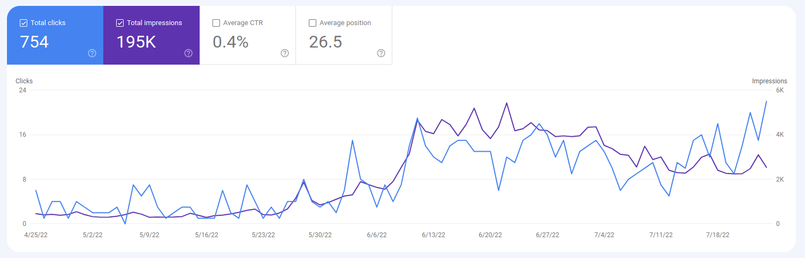

How I spent 0€ to get traffic from Google using Programmatic SEO
How I used it on getting first traffic with Where2buy.it
In this post, I explain how I used Programmatic SEO to get some traffic from Google's search engines for the most recent product I created: a search engine for food sold in physical stores.
Let's start from the basics:
Programmatic SEO is a technique used in the field of Search Engine Optimization (SEO). Like many other SEO practices, it aims to improve the quality and quantity of web traffic from search engines. It consists of the automatic generation of static pages that contain a direct link to your landing page or are one click away from your product's core feature.
What we need:
The technique uses a database and a templated HTML page to generate the pages. The database should contain the keywords you want to rank for on Google. For instance, you can start from a list of long-tail keywords or the list of cities where you sell your product.
The template should allow you to use variables inside your HTML, so they can be substituted using the data from your database. One detail about your database: you should also have some content specifically related to the keyword you are using. For instance, if you use keywords related to cities, you can include other information like the name of its region, nation or some text unique to that city. The objective is to obtain every page different from all the other pages. The reason is that Google ignores pages that are too similar to other pages it already indexes.
Which tools I used:
I used the Django template system to build the HTML pages. Of course, there are already no-code tools you can use on the Internet, like Webflow. I wrote a python script that generates the information needed to render the page through the template using keywords read from a database.
Database content:
In my database, I store different entities: The Cities, the Restaurants and the Products sold in those restaurants. I got the Cities data for free simply by using Django and its ecosystem of open-source pluggable apps, which solved many of my problems. I used Django-cities-light, which automagically downloads the data of all the cities in the world and stores them in my database. It also provides the hierarchy of City, Region and Nation. I got Restaurants and Products data from the Internet.
Generated Pages:
The pages generated for the sake of programmatic SEO are simply ranking pages. They are pages containing an ordered list of products sorted by specific metrics. For instance: price. For each category and city, I generated a list of the cheapest products sold in that city.
Results:
Results are ok, considering I knew almost nothing about SEO techniques. I still have to finish filling my database with all Italian cities, but having 4000 impressions and ten visitors per day is not bad, considering I only coded some software. Anyway, I am sure there are other tricks to increase even more my SEO, which can be a future starting point.
I will have a public talk about this subject on Monday. I hope I will include the Youtube presentation here.
Comments
Comments powered by Disqus